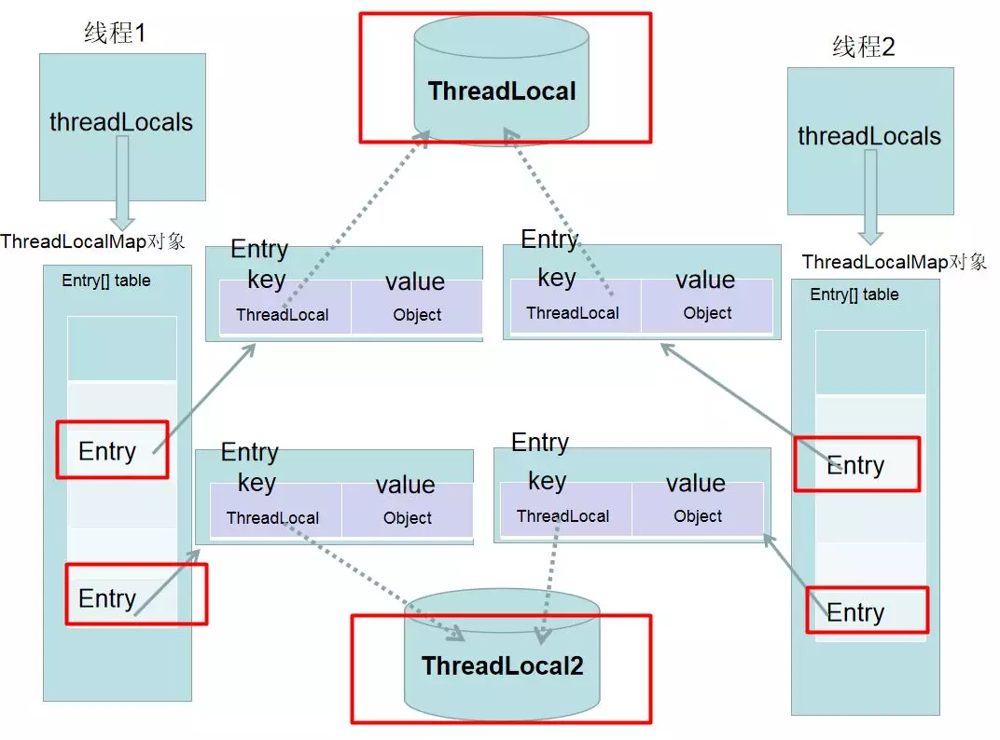

本博客系列是学习并发编程过程中的记录总结。由于文章比较多，写的时间也比较散，所以我整理了个目录贴（传送门），方便查阅。
ThreadLocal有点类似于Map类型的数据变量。ThreadLocal类型的变量每个线程都有自己的一个副本，某个线程对这个变量的修改不会影响其他线程副本的值。需要注意的是一个ThreadLocal变量，其中只能set一个值。
ThreadLocal<String> localName = new ThreadLocal();
localName.set("name1");
String name = localName.get();在线程1中初始化了一个ThreadLocal对象localName，并通过set方法，保存了一个值,同时在线程1中通过 localName.get()可以拿到之前设置的值，但是如果在线程2中，拿到的将是一个null。
下面来看下ThreadLocal的源码：
public void set(T value) {
Thread t = Thread.currentThread();
ThreadLocalMap map = getMap(t);
if (map != null)
map.set(this, value);
else
createMap(t, value);
}
public T get() {
Thread t = Thread.currentThread();
ThreadLocalMap map = getMap(t);
if (map != null) {
ThreadLocalMap.Entry e = map.getEntry(this);
if (e != null) {
@SuppressWarnings("unchecked")
T result = (T)e.value;
return result;
}
}
return setInitialValue();
}可以发现，每个线程中都有一个 ThreadLocalMap数据结构，当执行set方法时，其值是保存在当前线程的 threadLocals变量中，当执行get方法中，是从当前线程的 threadLocals变量获取。 (ThreadLocalMap的key值是ThreadLocal类型)
所以在线程1中set的值，对线程2来说是摸不到的，而且在线程2中重新set的话，也不会影响到线程1中的值，保证了线程之间不会相互干扰。
上面提到ThreadLoal的变量都是存储在ThreadLoalMap的变量中，下面给出下Thread、ThreadLoal和ThreadLoalMap的关系。

Thread类有属性变量threadLocals （类型是ThreadLocal.ThreadLocalMap），也就是说每个线程有一个自己的ThreadLocalMap ，所以每个线程往这个ThreadLocal中读写隔离的，并且是互相不会影响的。一个ThreadLocal只能存储一个Object对象，如果需要存储多个Object对象那么就需要多个ThreadLocal！
说完ThreadLocal的原理，我们来看看ThreadLocal的使用场景。
1. 保存线程上下文信息，在任意需要的地方可以获取
比如我们在使用Spring MVC时，想要在Service层使用HttpServletRequest。一种方式就是在Controller层将这个变量传给Service层，但是这种写法不够优雅。Spring早就帮我们想到了这种情况，而且提供了现成的工具类：
public static final HttpServletRequest getRequest(){
HttpServletRequest request = ((ServletRequestAttributes) RequestContextHolder.getRequestAttributes()).getRequest();
return request;
}
public static final HttpServletResponse getResponse(){
HttpServletResponse response = ((ServletRequestAttributes) RequestContextHolder.getRequestAttributes()).getResponse();
return response;
}上面的代码就是使用ThreadLocal实现变量在线程各处传递的。
2. 保证某些情况下的线程安全，提升性能
性能监控，如记录一下请求的处理时间，得到一些慢请求（如处理时间超过500毫秒），从而进行性能改进。这边我们以Spring MVC的拦截器功能为列子。
public class StopWatchHandlerInterceptor extends HandlerInterceptorAdapter {
//NamedThreadLocal是Spring对ThreadLocal的封装，原理一样
//在多线程情况下，startTimeThreadLocal变量必须每个线程之间隔离
private NamedThreadLocal<Long> startTimeThreadLocal = new NamedThreadLocal<Long>("StopWatch-StartTime");
@Override
public boolean preHandle(HttpServletRequest request, HttpServletResponse response,Object handler) throws Exception {
//1、开始时间
long beginTime = System.currentTimeMillis();
//线程绑定变量（该数据只有当前请求的线程可见）
startTimeThreadLocal.set(beginTime);
//继续流程
return true;
}
@Override
public void afterCompletion(HttpServletRequest request, HttpServletResponse response,Object handler, Exception ex) throws Exception {
long endTime = System.currentTimeMillis();//2、结束时间
long beginTime = startTimeThreadLocal.get();//得到线程绑定的局部变量（开始时间）
long consumeTime = endTime - beginTime;//3、消耗的时间
if(consumeTime > 500) {//此处认为处理时间超过500毫秒的请求为慢请求
//TODO 记录到日志文件
System.out.println(String.format("%s consume %d millis", request.getRequestURI(), consumeTime));
}
}
}
说明：其实要实现上面的功能，完全可以不用ThreadLocal（同步锁等），但是上面的代码的确是说明ThreadLocal这个是用场景很好的列子。
从上面的图中可以看到，Entry的key指向ThreadLocal用虚线表示弱引用 ，下面我们来看看ThreadLocalMap:
java对象的引用包括 ： 强引用，软引用，弱引用，虚引用 。
弱引用也是用来描述非必需对象的，当JVM进行垃圾回收时，无论内存是否充足，该对象仅仅被弱引用关联，那么就会被回收。当仅仅只有ThreadLocalMap中的Entry的key指向ThreadLocal的时候，ThreadLocal会进行回收的！！！
ThreadLocal被垃圾回收后，在ThreadLocalMap里对应的Entry的键值会变成null，但是Entry是强引用，那么Entry里面存储的Object，并没有办法进行回收，所以ThreadLocalMap 存在内存泄露的风险。
所以最佳实践，应该在我们不使用的时候，主动调用remove方法进行清理。这里给出一个建议方案：
public class Dynamicxx {
private static final ThreadLocal<String> contextHolder = new ThreadLocal<>();
public void dosomething(){
try {
contextHolder.set("name");
// 其它业务逻辑
} finally {
contextHolder .remove();
}
}
}